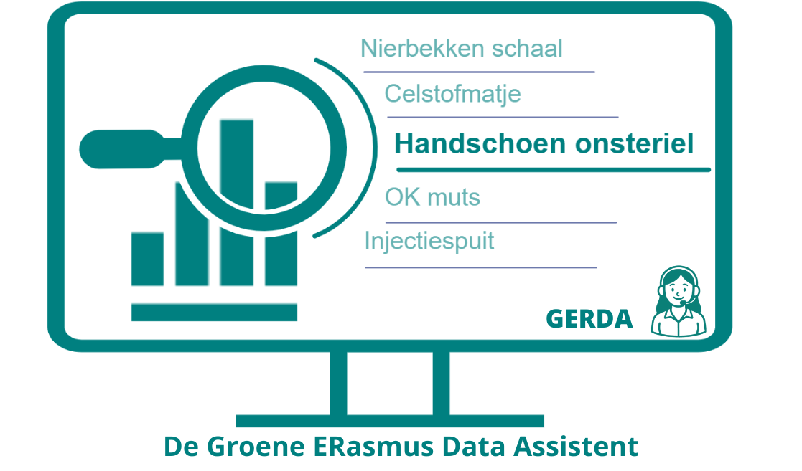

Gerda - Duurzaamheidsdashboard
Erasmus MC
Voor het duurzaamheidsteam van het Erasmus MC heb ik het duurzaamheidsdashboard 'Gerda' van probleem tot implementatie ontworpen, ontwikkeld en geïmplementeerd, inclusief de datamodellering, visualisaties, documentatie en adoptie binnen de Green Teams op de afdeling.
